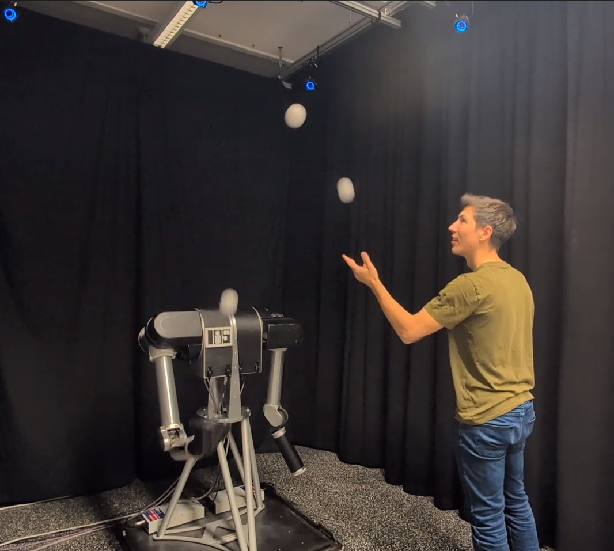

Authors
Corresponding author: kai@robot-learning.de

Dynamic object exchange between humans and robots remains a challenging problem due to uncertainty in perception, timing, and contact-rich interaction. Human-robot juggling represents a particularly demanding instance of this problem, requiring precise real-time coordination, predictive motion planning with feedback control, and robustness to variability in human motion. Enabling such skills is of interest for advancing physical human-robot interaction and shared autonomy. We present a real-time planning and control architecture for human-robot partner juggling that enables the robot to reliably catch and throw balls in synchronized multi-ball patterns with a human partner. The system integrates predictive ball tracking, adaptive online trajectory optimization using a multiple-shooting formulation, and a state-machine-based coordination logic to enable synchronized multi-ball human-robot partner juggling. In a user study with 8 participants of varying juggling skill from beginner to expert, we demonstrate that our system can achieve three-ball cascades shared between the robot and the human. All participants exceeded previously reported best-case results within a 10 minute test session, with one participant extending the previous record for shared three-ball cascade juggling fivefold to 20 consecutive robot catches, and another participant achieving a 100% success rate with 40 consecutive catches in a single-ball catch-and-return setting.